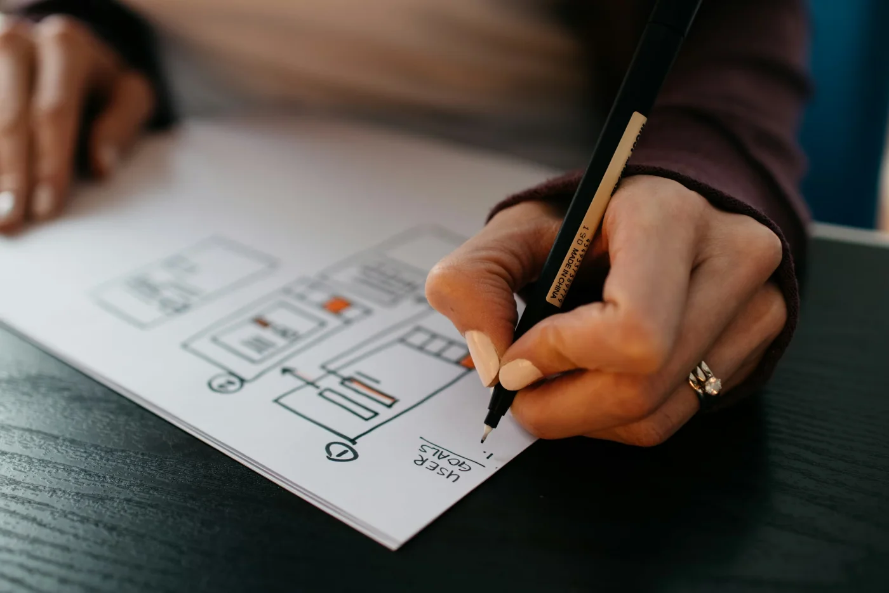
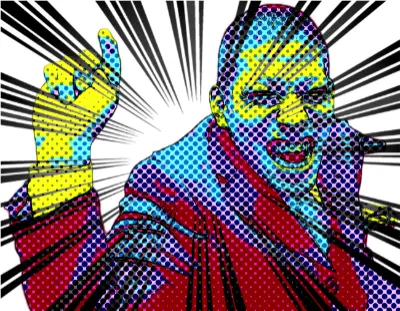

ウェブサイト制作
ビジュアルと使いやすさを両立し、スマホやPCなどの主要な端末で一貫した見え方と導線を設計します。お客様の魅力が伝わり、訪問者が迷わず次の行動へ進めるサイトを共に作り上げます。
一人でも多くへ。 届くを、カタチに。

ビジュアルと使いやすさを両立し、スマホやPCなどの主要な端末で一貫した見え方と導線を設計します。お客様の魅力が伝わり、訪問者が迷わず次の行動へ進めるサイトを共に作り上げます。
お客様ご自身での更新を前提に、テーマに縛られないオリジナルデザインをWordPressへ実装します。日々の発信や実績の追加が円滑に続くよう、運用を見据えた情報設計で支えます。
既存サイトの課題と情報の散らばりを整理し、検索エンジンが読み取りやすいHTMLと情報構造へ組み替えます。ブランドに沿った新顔として、公開後も伸ばせる土台へ生まれ変わらせます。
サーバー契約やドメイン名取得の代行から、稼働監視や更新の伴走まで、止まらない公開を支える体制を整えます。WordPressの更新や軽微な不具合への初期対応などにも対応します。
検索で見つけやすい土台は、表示の速さとマルチデバイスでの読みやすさからと捉え、技術面と文面を丁寧に整えます。見出し階層などGoogle推奨の構造化に沿った内部対策を進めます。
JIS規格などの基準に配慮した、適切なセマンティックマークアップを行います。見た目の美しさだけでなく、どんな環境からでも快適に情報へアクセスできる高品質なサイトを構築します。

1984年、東京都出身。国士舘大学21世紀アジア学部卒業。
学生時代はNPO法人国際ボランティア学生協会（IVUSA）に所属し、中国・韓国での国際貢献活動やスマトラ島沖地震の被災地ボランティアなど、国内外の支援現場に従事しました。
現在はフリーランスのウェブ制作者として活動。アクセシビリティ検査技術者（レベル4）の専門知識と障害当事者としての視点を掛け合わせ、「誰もが等しく情報にアクセスできる環境づくり」に取り組んでいます。
ウェブサイト制作やアクセシビリティ対応について、お気軽にご相談ください。
迅速にご返答させていただきます。